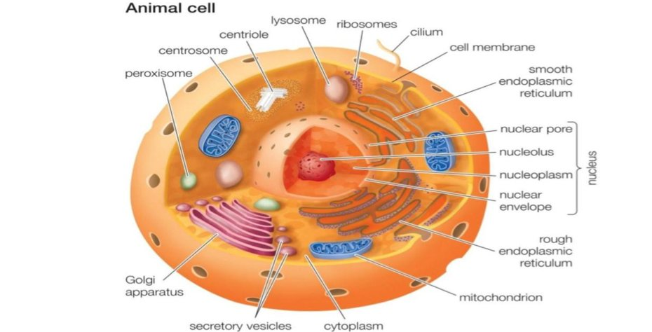
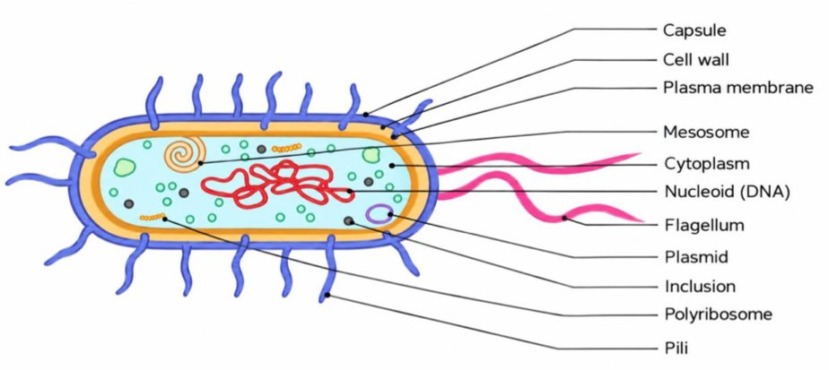
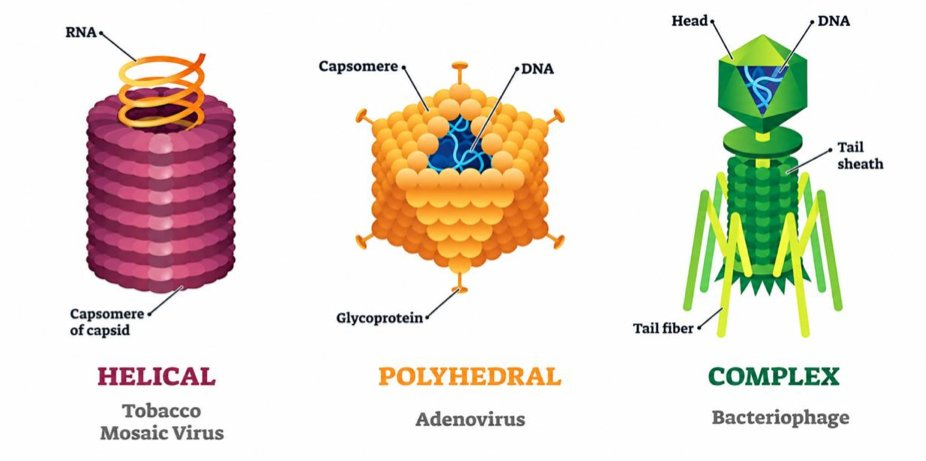

S1 · Cytology · Summary
General organization of the cell
- Essentials
- Generalities
- Eukaryotes
- Eubacteria
- Archaea
- 3 domains compared
- Viruses
- Exam traps
- Self-check
If you remember only this
- The living world = 3 domains: Eukaryotes, Eubacteria, Archaea. Viruses are not cells.
- RER (ribosomes on the ER) → proteins for secretion and most membrane proteins. Free ribosomes → proteins for the cytosol and for peroxisomes and mitochondria.
- Membrane asymmetry: the outer and inner faces of the plasma membrane do not have the same structure or functions.
- Eubacteria: unicellular, diverse shapes but a common organization plan; plasma membrane, peptidoglycan wall, nucleoid without envelope. Capsule, pili, flagella, inclusions, plasmids are optional ("may possess").
- Archaea: unicellular, similar to eubacteria in morphology and metabolism, but closer to eukaryotes at the molecular level; no peptidoglycan; ether (isoprenoid) lipids; many live in extreme habitats.
- Viruses: obligate parasites, no cytoplasm, no true nucleus, no metabolism of their own; genome (DNA or RNA) + protein capsid; use the host's machinery; released by lysis or budding.
I. Generalities p. 1
- All living organisms are made of cells, the elementary units of organization of living matter.
- The term "cell" was first proposed by the Englishman Robert Hooke in 1665.
- Unicellular and multicellular organisms share a similar basic metabolism. Cell specialization causes variations of the "typical cell" → diversity of shapes and specific metabolic pathways, adapted to different modes and environments of life.
II. Classification p. 1
A – Eukaryotes p. 1–2 2023-24 · 2024-25 · 2025-26
The eukaryotic cell essentially contains:
| Component | Structure | Role |
|---|---|---|
| Nucleus | Nucleoplasm with DNA as chromatin + the nucleolus. Nuclear envelope = 2 membranes: outer (contacts the cytoplasm) and inner (separated from chromatin by the lamina), with the perinuclear space between them. Nuclear pores cross the envelope. | Holds the information (DNA) to maintain species characteristics and make specific proteins. Pores let endogenous and exogenous substances pass in both directions. |
| Plasma membrane | Lipid bilayer + transmembrane and peripheral proteins. Bears receptors; may have microvilli and intercellular junctions. | Main role: maintain the integrity of the cell. Outer face ↔ extracellular medium; inner face ↔ intracellular medium. |
| Cytoskeleton | Microtubules, microfilaments, intermediate filaments | — |
| Endomembrane system | ER, Golgi apparatus, lysosomes | Communicate via vesicles that bud from their membranes. |
| Mitochondria | Double membrane: outer highly permeable; inner less permeable, folded into cristae that project into the matrix. | Cristae hold the respiratory chain and the ATP-synthesizing machinery (ATP hydrolysis releases part of the energy the cell uses). The matrix holds mitochondrial DNA and what is needed for protein synthesis. |
Membrane asymmetry
The two faces of the plasma membrane (outer, facing the extracellular medium; inner, facing the intracellular medium)
do not have the same structure or functions. 2025-26
The endomembrane system in detail 2023-24 · 2024-25 · 2025-26
| Organelle | Structure | Function |
|---|---|---|
| ER | Network of interconnected cavities bounded by a membrane | — |
| RER (rough) | ER bearing ribosomes | Synthesis of proteins for secretion and of most membrane proteins |
| SER (smooth) | ER without ribosomes | Lipid synthesis |
| Golgi apparatus | Stack of flattened sacs (dictyosomes) + vesicles | Modifies, sorts, packages, distributes ER products; glycosylation; main distributor of newly made membranes |
| Lysosomes | Membrane-bound organelles containing hydrolases | Degrade most endogenous and exogenous molecules |
Ribosomes bound to the ER (RER)
Secreted proteins + most membrane proteins.
Free ribosomes
Translate mRNA into proteins for the cytosol or for organelles such as peroxisomes and mitochondria.

B – Eubacteria p. 2 2022-23 · 2025-26
- Highly diverse group of unicellular microscopic organisms, variable shapes but a common organization plan.
Always / in general
- Resistant cell wall (mainly peptidoglycan)
- Plasma membrane: lipid bilayer + integral proteins
- Chromosome = nucleoid: closed-loop filament in the centre, not separated from the cytoplasm by an envelope
- Cytoplasm rich in proteins, with ribosomes
May also possess
- A capsule (polysaccharide)
- Inclusions (glycogen, lipids…) = storage reserves
- Surface appendages: pili and flagella
- Plasmid

C – Archaea p. 2–3 2022-23 · 2023-24 · 2024-25 · 2025-26
- Formerly archaebacteria; unicellular microorganisms.
- Very similar to eubacteria in morphology and metabolism: size 0.1–15 µm, a single circular chromosome, division by binary fission, often protein flagella for motility; coccoid, rod-shaped or filamentous.
- At the molecular level, much closer to eukaryotes than to eubacteria: proteins of information processing (DNA replication, repair, transcription) resemble eukaryotic ones; archaea and eukaryotes share proteins absent from eubacteria.
- Unique features:
- Envelope without peptidoglycan: usually a protein layer over the plasma membrane.
- Phospholipids = isoprenoid ethers (from a long-chain alcohol), not fatty acid esters as in eubacteria and eukaryotes.
- Habitats: some thrive in extreme conditions (anaerobic, high salinity, high temperature, great depth) — marshes, deep-sea hydrothermal vents, saline waters, acidic hot springs. Many also live in ordinary habitats: soils, lakes, oceans, even the intestines and lungs of mammals.
Memory trick
Archaea look like bacteria (shape, size, metabolism) but think like eukaryotes (DNA replication, repair, transcription proteins).
The 3 domains compared
| Eukaryotes | Eubacteria | Archaea | |
|---|---|---|---|
| Cells | — | Unicellular | Unicellular |
| DNA | Nucleus with a double-membrane envelope | Nucleoid, closed loop, no envelope | Single circular chromosome |
| Wall / envelope | — | Wall mainly peptidoglycan | No peptidoglycan; protein layer |
| Membrane lipids | Fatty acid esters | Fatty acid esters | Isoprenoid ethers |
| Organelles | ER, Golgi, lysosomes, mitochondria, cytoskeleton | Ribosomes in a protein-rich cytoplasm | — |
| Closest to… | — | Archaea in morphology/metabolism | Eubacteria in morphology/metabolism; eukaryotes at the molecular level |
III. Viruses p. 3 2022-23 · 2023-24 · 2024-25
- Pathogenic agents that cannot reproduce outside a host cell → obligate parasites.
- No cytoplasm, no true nucleus: nucleic acid (DNA or RNA) + proteins.
- DNA viruses: e.g. hepatitis B virus.
- RNA viruses: e.g. HIV, SARS-CoV-2 (Covid-19).
- Each virus = a genome (DNA or RNA) surrounded by a protein capsid that protects it.
- No metabolism of its own, cannot make its proteins alone → uses the host cell's machinery.
Viral multiplication
enters a host cell→hijacks its machinery→replicates its genome + makes viral proteins→new particles assembled→virions released
Release of virions: 2 mechanisms
| Cell lysis | Budding | |
|---|---|---|
| What happens | The host cell is destroyed, releasing the new virions | Enveloped viruses leave by taking a piece of the host plasma membrane → it becomes their viral envelope |
| Host cell | Dies | Not necessarily destroyed immediately; may keep producing viruses for some time |

Exam traps
False statements that keep coming back
- "Viruses have a cytoplasm and a true nucleus" — false. 2 years
- "Viruses are non-obligate parasites with their own metabolism" / "can grow and multiply autonomously" — false: obligate parasites, no metabolism of their own. 2 years
- "Archaea have rRNAs similar to those of eukaryotes" — false per the official keys, which say archaeal rRNAs are different from both eubacteria and eukaryotes (rRNA is not discussed in the PDF). 2 years
- "Archaea are more similar to bacteria at the molecular level" — false: closer to eukaryotes (they resemble bacteria only in morphology and metabolism).
- "Archaea are multicellular" / "Eubacteria are multicellular with tissues" — false: both unicellular.
- "Archaea have peptidoglycan walls / a nucleus / mitochondria" — false.
- "Bacteria always contain pili / a capsule" — false: those are optional. The structure that is always present (in the exam key) is the plasma membrane.
- "ER-bound ribosomes make the membrane proteins of peroxisomes" — false: peroxisome (and mitochondrial) proteins come from free ribosomes. ER, plasma membrane and lysosome membranes = ER-bound. 2 years
- "Free ribosomes make proteins for secretion / glycosylation in the Golgi / lysosomes" — false: cytosol, peroxisomes, mitochondria.
- "Membrane asymmetry = equal composition on both sides" — false: different structure and functions.
- True statements to recognise: viruses use host ribosomes, contain a genome, all have a protein capsid; bacteriophages infect bacteria; some viruses get an envelope from cell membranes (budding).
Self-check
What are the 3 domains of the living world? Where do viruses fit?
Eukaryotes, Eubacteria, Archaea. Viruses are not cells (no cytoplasm, no nucleus) — obligate parasites.
Who proposed the term "cell", and when?
Robert Hooke (English), 1665.
Describe the nuclear envelope.
Two membranes: outer (contacts the cytoplasm) and inner (separated from chromatin by the lamina), with the perinuclear space
between them; nuclear pores allow transit in both directions.
RER vs free ribosomes: which proteins does each make?
RER: secreted proteins and most membrane proteins (ER, plasma membrane, lysosomes). Free ribosomes: cytosolic proteins and
proteins for peroxisomes and mitochondria.
What does the SER do? And the Golgi apparatus?
SER: lipid synthesis. Golgi (stacked dictyosomes): modifies, sorts, packages and distributes ER products; glycosylation;
main distributor of newly made membranes.
Compare the two mitochondrial membranes.
Outer: highly permeable. Inner: less permeable, forms cristae carrying the respiratory chain and ATP-synthesizing machinery.
The matrix contains mitochondrial DNA and protein-synthesis components.
What is membrane asymmetry?
The outer and inner faces of the plasma membrane have different structures and functions.
Which bacterial structures are optional?
Capsule (polysaccharide), inclusions (glycogen, lipids), pili, flagella, plasmid.
How are archaea like eubacteria, and how are they like eukaryotes?
Like eubacteria: morphology and metabolism (0.1–15 µm, one circular chromosome, binary fission, flagella). Like eukaryotes:
molecular level — replication, repair and transcription proteins; shared proteins absent from eubacteria.
Two features unique to archaea?
Envelope without peptidoglycan (protein layer); phospholipids are isoprenoid ethers, not fatty acid esters.
Give a DNA virus and two RNA viruses.
DNA: hepatitis B virus. RNA: HIV, SARS-CoV-2.
Lysis vs budding?
Lysis destroys the host cell to release virions. Budding: enveloped viruses leave wrapped in a piece of plasma membrane
(their envelope); the cell is not necessarily destroyed at once and may keep producing virus.
Name the 3 capsid shapes with an example of each.
Helical (tobacco mosaic virus), polyhedral (adenovirus), complex (bacteriophage).